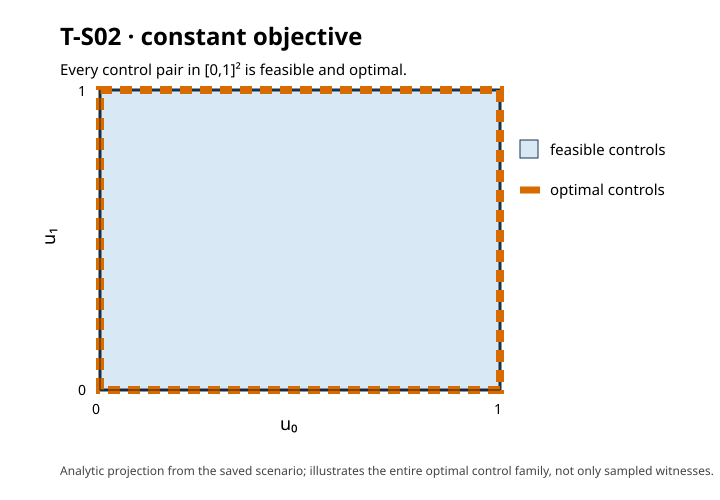
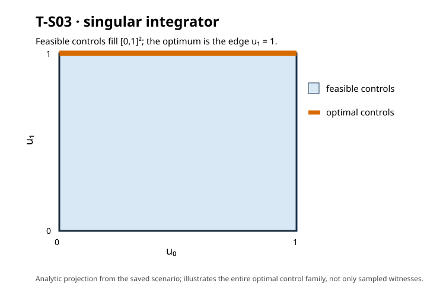

EXP-02 paired synthesis profiles
Partial, descriptive Strategy A/B measurements on T-S02 and T-S03. No performance winner or limiter is claimed. See the full report and limitations.
| Profile | Method | Measured median | Range |
|---|---|---|---|
| T-S02 | Reach-back | 5,345,407 ns | 5,246,581–9,692,986 ns |
| T-S02 | Strategy B | 567,883 ns | 529,680–706,589 ns |
| T-S03 | Reach-back | 4,741,277 ns | 4,687,079–10,245,155 ns |
| T-S03 | Strategy B | 1,249,958 ns | 1,234,313–1,297,869 ns |
T-S02 complete optimal control set
Constant objective: every point of the control square is optimal.

T-S03 complete optimal control set
The objective is minimized on the upper edge of the feasible control square.

Raw JSONL, process metadata, summaries, scenarios and all file hashes are included in this directory. These are numerical-assurance measurements, not formal optimality proofs.